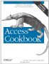
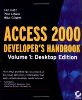

The Access Web MVPS
Tony's Microsoft Access tips including Microsoft Access Performance FAQ
Allen Browne's Access tips
Access Ribbons - customise the new user ribbon interface.
Google Refine - Power tool for cleaning up and transforming messy data.
Q209207 - Command-line switches for MS Access
 Access Cookbook, 2nd Edition, Third Edition Aug 2002 by Ken Getz
Aimed at intermediate to advanced Access professional developers. Access 2000 Developer's Handbook by Paul Litwin, Ken Getz, Mike Gilbert.
The classic Developer's Handbook, Volume 1
This is a very old text for a computer book, but the basics of Access have not changed much so it is still recommended.
Office Resource Kit by Microsoft Corp 2003 | 2007 | 2010 (free download)
Access 2010 Runtime - Microsoft.com
Access 2010 Sp1 32 bit & 64 bit - Microsoft.com
Access 2007 Runtime - Microsoft.com
Access 2007 Developer Extensions - Microsoft.com
Access Database Engine 2010 Redistributable
SS64 Discussion Forum
“Talk is cheap. Show me the code” - Linus Torvalds